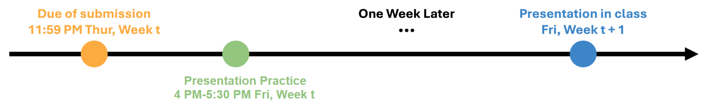

Logistics
Grading Policy
Homework 0 (5%)Paper reviews (20%)
Student presentation (20%)
Course project (45%)
In-class participation (10%)
Homework 0
This is a test to make sure you are prepared for this course.- Due: Jan 29 (Thur) 11:59PM
- PDF: Download Here
- Submission: Canvas
- Grading: 5% of the total grade
- Late submission: Late submission is not accepted
Paper Reviews
There will be two papers presented in each class. You need to pick 10 papers among them to write reviews. The reviews are graded based on the level of understanding and critical analysis of the work. Here are information about paper review:- Due: 11:59pm the previous night for each class of student presentations (11:59pm Thur)
- Submission: Canvas
- Grading: 20% of the total grade, each review worth 2% of total grade
- Do not use ChatGPT to generate reviews
- Focus on weakness and failure cases you come up with
- Score will only be P/F
- In the case when more than 10 reviews are submitted by a student, we will take the top-scored 10 for grading.
- Late submission: Late submission is not accepted
Useful Resources
- Reviewing a CS Conference Paper, Stephen Mann
- How to Write Good Reviews for CVPR, CVPR 2019 Program Chairs
Student Presentations
Each student should expect to have one presentation or code report regarding their assigned paper readings. Each class will consist of 2 presentations. Here are the information about the presentation:- Signup sheet: [link]. Due on Jan 25 11:59PM. Be careful when signing up as you may NOT be able to revert it!
- Due of slide submission: 7 days prior to the presentation day (i.e., 11:59PM Thur if presenting next Fri)
- Format of slide submission: email the slides to the TA and the instructor with title “[COMS6998 Presentation] NAME" and TA will help schedule a presentation practice with the instructor
- Presentation format: 15 mins presentation + 5 mins Q&A for each paper
- Presentation practice: 4:00-5:30PM Fri with the instructor, around 20 mins for each presentation
- Timeline example:
-

- Grading: 20% of the total grade
- Present clearly and concisely (4%)
- Prior works and identify the problem addressed by the paper (4%)
- Analyze the strengths and weaknesses of the paper (4%)
- Discuss future research directions (4%)
- Respond to questions and engage in open-ended discussion (4%)
- Late submission: Failures to schedule and attend the in-person presentation practice would incur a 40% deduction on the presentation score
- Due of report submission: 1 days prior to the presentation day (i.e., 11:59PM Thur if presenting Fri)
- Format of the submission: email the following material to the TA and the instructor with title “[COMS6998 Code Report] NAME"
- A written report with at least 3 pages using the RSS template
- A supplementary material in format of zip file or website (example: 3D-ViTac)
- Due of presentation submission: 7 days prior to the presentation day (i.e., 11:59PM Thur if presenting next Fri)
- Format of the submission: email the following material to the TA and the instructor with title “[COMS6998 Code Report] NAME"
- A 5-min slides presentation after the paper presentation sharing hands-on experience of running the code
- Presentation format: 5 mins presentation for each code report
- Presentation practice: 4:00-5:30PM Fri with the instructor, around 5 mins for each presentation
- Grading: 20% of the total grade
- Practice
- Write the implementation details clearly (4%)
- Analyze the implementation quality and how it can be further improved (4%)
- Analyze why the results meet / do not meet the expectation (4%)
- Discuss future research directions and development plan (4%)
- Share supplementary materials showing videos or interactive results (4%)
Useful Resources
- Tips for Giving Clear Talks, Kayvon Fatahalian
- Three Tips for Giving a Great Research Talk, Lewis, Gruber, Van Bavel, Somerville
Course Project
The course project aims to help the students gain hands-on experiences in robot learning. For more detail, please see the Project page.Useful Resources
- Writing in the Sciences, Kristin Sainani (Coursera, YouTube)
- How to Write a Good CVPR Submission, Bill Freeman
- Novelist Cormac McCarthy’s Tips on How to Write a Great Science Paper, Van Savage, Pamela Yeh
In-Class Participation
Students are encouraged to partipate in discussion and in-class interaction. Participation totally worth 10% of total grade. Each in-class interaction or Ed Discussion (i.e., raising and answring questions) worth 1% of total grade. During one lecture, each student will earn 2 points at most.
Academic Integrity
All work that you submit should be written solely by you and your group, and you should cite any significant sources of ideas. If any part of your project builds upon efforts before the semester (e.g., your ongoing research project), be sure to discuss with the instructor in advance. Plagiarism and other integrity violations will go on record at the university, and the minimum penalty will be a zero for the entire assignment. See the student code for more information on what constitutes an academic integrity violation.
The use of artificial intelligence tools (such as ChatGPT) in this class shall be permitted on a limited basis. AI writing tools can only be used for grammar checking, spelling fixing, and language polishing. They should not be used to replace your critical thinking and idea generation. You are also welcome to seek my prior-approval to use these tools on any assignment. In either instance, AI writing tools should be used with caution and proper citation, as the use of AI should be properly attributed.
Acccommodations
To obtain disability-related academic adjustments and/or auxiliary aids, students should contact both the instructor and the Disability Services (DS) as soon as possible. You can contact DS at 411 W. 116th Street, New York, NY 1007, (212) 854-2388, or via email at health@columbia.edu.